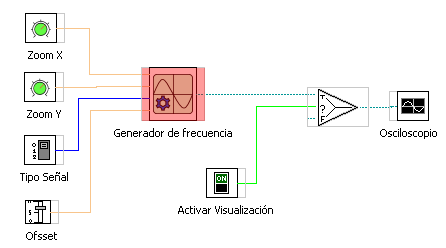

Elementos Analógicos :
GENERADOR DE SEÑAL
Este elemento permite generar señales que varian en el tiempo
ELEMENTOS QUE SE PUEDEN MODIFICAR
- Escala del eje X. Equivale a la modificacion de la
frecuencia.
- Escalado en el eje y. Equivale a la amplitud de la señal.
- Ofsset de a señal. Equivale al desplazamiento de la
señal en el eje y (nivel de continua de la señal)
- Visibilidad de etiquetas de los ejes.
- Tipos de Señal
- Rallado de la pantalla de visualización.
En el ejemplo se ve una aplicacion de un osciloscopio
alimentado por la señal de un generador de señal.
